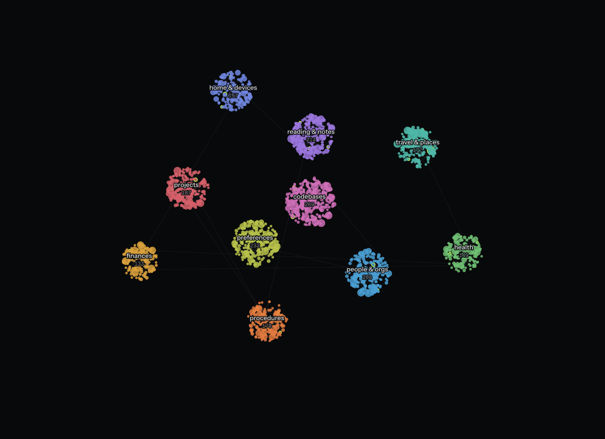
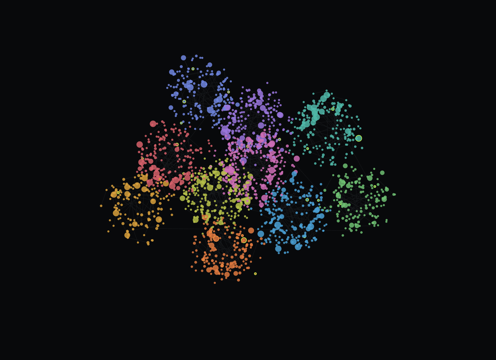
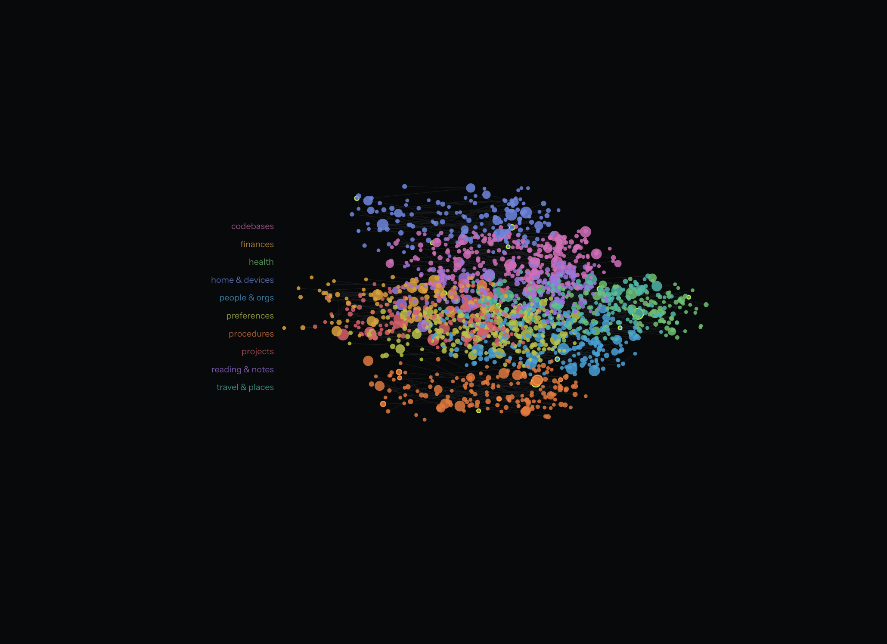
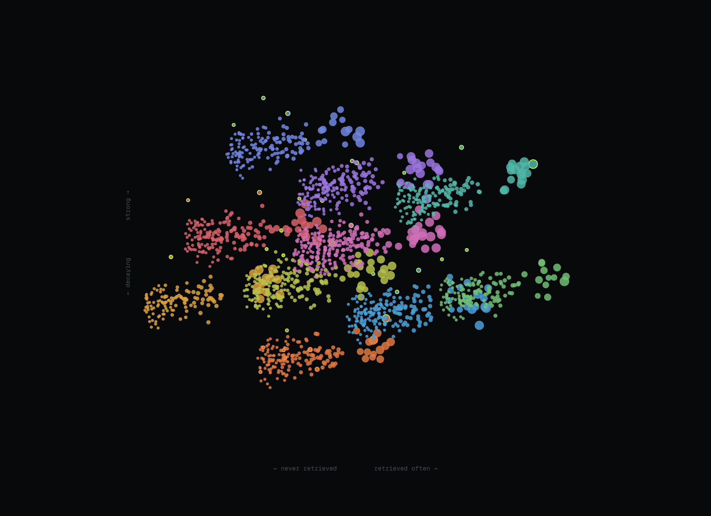

01
Review
What your agents learned since you last looked, in two lanes — because “is this right?” and “which of these two is right?” are different decisions. Keyboard-first; reaching for a mouse per item does not scale.
A skill · v0.1.0 · local-first
Install LEDGER once and every agent on the machine gets a bundled CLI it shells out
to — recall before it answers, remember when it learns
something durable. You get a supervision UI showing exactly what was written.
It is one SQLite file on your disk. Nothing leaves the machine: not the memories,
not the queries, not even the fonts in the UI.
npx skills add kucukkanat/ledger-memory
Requires Bun. No build step, no dependency to fetch.
01 — Overview
That works to a few hundred entries. After that, every retrieval returns something technically relevant and mostly stale, nobody can tell which of two contradictory notes is current, and there is no honest way to delete anything because you cannot remember why it was written.
LEDGER makes three distinctions that keep a store useful past that point. They are the whole design, and the rest of this page is those three ideas plus the commands that expose them.
01
An assertion is reviewed one at a time and loses strength when nothing reads it. A slice of a document is trusted or dropped whole with its source.
02
There is no strength column. Every read recalculates it from retrieval count, recency and independent corroboration.
03
A lexical rule narrows millions of pairs to a handful. An agent that can actually read returns the verdict. Which memory survives stays your call.
Who it is for
You run one or more agents on your own machine, across sessions, and you are tired of re-explaining the same facts.
You want to see what got remembered — and to drop it when it is wrong — rather than trusting an opaque vector index.
You would rather nothing left the machine at all. LEDGER has no server to sign into and no protocol to configure.
02 — Install
Add the skill
# this project
npx skills add kucukkanat/ledger-memory
# or for every project
npx skills add kucukkanat/ledger-memory -g
That copies skills/ledger-memory/ into .claude/skills/
(or ~/.claude/skills/). It contains three things: SKILL.md,
a single bundled cli.js, and the built UI. Nothing is fetched and
nothing is compiled — but it does need Bun on the machine,
because cli.js runs on Bun and talks to SQLite through it.
Look at what your agents learned
bun ~/.claude/skills/ledger-memory/cli.js serve # http://127.0.0.1:7444
● LEDGER running http://127.0.0.1:7444
1284 memories · 6 pending review · /Users/you/.ledger/ledger.db
Bound to loopback. Nothing in this store leaves this machine.
The server is not on the agents' path at all — they open the SQLite file directly
through the CLI, so they keep remembering whether or not it is running. It is where
you work: reviewing, correcting and resolving all happen through it.
Default port 7444, default host 127.0.0.1.
What the agent does at session start
LEDGER="$(find ~/.claude/skills .claude/skills -name cli.js -path '*ledger-memory*' 2>/dev/null | head -1)"
LEDGER="$(cd "$(dirname "$LEDGER")" && pwd)/cli.js"
# so the human can see which agent wrote what
export LEDGER_AGENT=claude
The second line makes the path absolute, so it survives a cd. Every
call afterwards is bun "$LEDGER" <command>. Throughout this page
that is shortened to ledger <command> for readability.
SKILL.md is the agent-facing interface — it is the file the
model reads, and it tells the agent to say so rather than guess if the path comes
back empty.
A session, end to end
$ ledger recall "invoice terms brightpath"
2 memories
m_msdvpyg9lkdujq 84 Brightpath invoices net-45 in the 2026 contract [money, invoice]
m_msdvpyi6f2x7zr 51 Brightpath pays late by about nine days [money, invoice]One command routinely saves an agent from asking you something you have already told it twice. The number is strength on a 0–100 scale — that is section 04.
03 — Idea one
A claim is an assertion an agent believes to be true — “Brightpath invoices net-45 in the 2026 contract.” A chunk is a slice of an ingested document. They are the same table and almost nothing else about them is the same.
The reason is arithmetic. A person can look at forty new claims a week and say yes or no to each. Nobody can review ten thousand chunks, so LEDGER never asks you to: a document is trusted or dropped whole, and its chunks inherit that number verbatim.
| Dimension | Claim | Chunk |
|---|---|---|
| Written by | ledger remember | ledger ingest |
| Strength | computed from use, freshness, corroboration | its source’s trust, clamped to 0.15–0.97 |
| Decays? | Yes — τ = 190 days | No, by design |
| Review queue | Born pending | Born already reviewed — never queued |
| Individually approved? | Yes | Refused: not-a-claim |
| Can contradict | Another claim | Nothing — chunks are never paired |
| When the source is dropped | Survives, flagged orphaned-source, re-queued | Soft-deleted with the document |
| Trust changes when… | it is retrieved, corroborated, or left alone | you move the source’s trust slider |
Ingest a document
ledger ingest ./ops-handbook-v4.md --cluster proc --trust 0.86
# formats the CLI cannot read are the caller's job
your-pdf-tool report.pdf | ledger ingest - --cluster reading --trust 0.7ingested s_msdvpz3k7q 38 chunks
Chunks are searchable now and are never reviewed one by one. If the document
asserts something worth remembering on its own, `ledger remember` it as a claim
— that becomes a reviewable memory.
Eleven extensions are read straight off disk:
md markdown txt text csv tsv json jsonl log yaml yml.
Anything else — PDF, docx — fails with a message telling the agent to extract the
text itself and pipe it in, which is why any format can be ingested even
though only eleven can be read. Documents are split on blank lines and packed
toward 900 characters, and a markdown heading always starts a new chunk so a
section keeps its title.
Ingesting a document is not the same as learning from it.
If a document asserts something worth holding on its own, an agent follows up with
remember. That creates a claim, and claims do get reviewed. The
distinction is deliberate: retrieval over a handbook is a search problem, but
believing what the handbook says is a judgement, and only one of those is safe to
automate.
04 — Idea two
There is no strength column. It is recomputed on every read, in exactly
one place, from the evidence that justifies it. Storing the number would let it drift
away from that evidence — and a stale number that looks authoritative is worse than
no number.
strength = 0.17 + 0.27·used + 0.34·fresh + 0.22·corroborated
used
ln(1 + hits) / ln(301)
Log-scaled retrieval count against a 300-read ceiling. The first read moves it 0.12; the hundredth moves it almost nothing. Beyond 300, more retrieval proves nothing new.
fresh
exp(−days / 190)
Exponential decay on time since last read. At exactly 190 days a memory keeps 1/e — about 37% — of its freshness. This is the only signal that moves on its own.
corroborated
(sources + readers − 2) / 3
Independent sources plus distinct agents that have read it. The −2 discounts the first of each: written once by one agent from one source corroborates nothing.
Live · one claim, watched over time
DECAYING · 14 d/s
A brand-new claim scores 51. Left alone it falls to 40 in 74.3 days.
The numbers you will actually see
| Situation | strength |
|---|---|
| Brand-new claim — 0 hits, 1 source, 1 reader | 0.51 |
| The same claim, untouched for 190 days | 0.295 |
| The same claim, untouched for ten years | 0.17 |
| Saturated — ≥300 hits, just read, corroborated | 0.99 |
| Any pinned claim — opts out of decay entirely | 0.99 |
| A chunk, following its source’s trust | 0.15–0.97 |
An unpinned claim lives in [0.17, 0.99]: the floor is a constant every claim gets for existing, so nothing ever reaches zero and nothing ever reaches certainty. Pinning holds a claim at 0.99 regardless of use.
05 — Idea three
Deciding that “trains under five hours” contradicts “flies anything over three hours” is a judgement about meaning, and a lexical rule that tries to make it will be confidently wrong. But a lexical rule is very good at something else: cheaply narrowing millions of pairs down to a handful worth a second look.
So the pipeline has three actors, and the boundaries between them are the point.
STAGE 01 · THE STORE
On every claim write, up to 500 recently-read claims in the same cluster are compared. A pair survives only if it is topically close (Jaccard overlap ≥ 0.18, on whole text or on the first three content words) and something concrete diverges.
Score = overlap × 0.6 + min(1, signals ÷ 3) × 0.4. Ranking only — never a verdict.
STAGE 02 · AN AGENT
An agent — which can actually read — answers one question per pair: can both
be true at once? The signals travel with the candidate so it knows where to
look. unrelated settles the pair for good; conflict
opens one for you.
--detector 0–1 is the agent’s own confidence, not the lexical score. The two are unrelated numbers.
STAGE 03 · YOU
Choosing which memory survives is never delegated. Five outcomes, in the UI, the terminal TUI, or one command.
Retirement is a soft delete. Nothing is ever destroyed.
What the agent sees, and what it sends back
cc_msdvpyi8r1tj4u divergent numbers, divergent times, divergent weekdays
A m_msdvpyg9lkdujq The weekly review runs Friday 16:00
B m_msdvpyi6f2x7zr The weekly review runs Thursday 09:30
For each pair: can both be true at once?
no → ledger judge <id> --verdict conflict --kind "<kind>" --detector 0.0-1.0
yes → ledger judge <id> --verdict unrelated (settles the pair for good)ledger judge cc_msdvpyi8r1tj4u --verdict conflict \
--kind "stale schedule" --detector 0.9 --note "the schedule moved"
# then, later, yours alone
ledger resolve cf_msdvpz01x8 mergeWhen something has changed, the instruction to agents is: supersede, never overwrite. Write the new fact as its own memory and let the store notice the contradiction. Editing the old one destroys the evidence that a decision was ever made differently.
The CLI has no resolve command in its agent section, deliberately.
06 — Two verbs
recall and search are different commands.
An agent reaching for a memory is evidence that the memory is worth keeping, so
recall counts as a retrieval and feeds used and
fresh. You scrolling the Browse table is not evidence of anything, so
search does not count — and it does not even pass an agent id.
If supervising the store fed the strengths being supervised, the numbers would mean
nothing. That could have been one command with a --count-read flag.
A flag would eventually get passed wrongly, and the failure would be silent and
unrecoverable, so it is two verbs.
| Dimension | recall | search |
|---|---|---|
| Audience | agents | you |
| Counts as a retrieval | Yes | No |
| Agent id sent to the store | --agent / $LEDGER_AGENT | none at all |
Default --limit | 10 | 25 |
| Layout | one parseable line per hit, full id, untruncated text | a table: short id, strength bar, strength, writer, 70-column text, cluster, last read |
| Empty result | nothing remembered about that | ▍ 0 memories 8ms |
recall — for the agent
2 memories
m_msdvpyg9lkdujq 84 Brightpath invoices net-45 in the 2026 contract [money, invoice]
m_msdvpyi6f2x7zr 51 Brightpath pays late by about nine days [money, invoice]search — for you
▍ 2 memories 8ms
lkdujq █████░ 84 wren Brightpath invoices net-45 in the 2026 contract finances 3d
f2x7zr ███░░░ 51 claude Brightpath pays late by about nine days finances 11d
Retrieval is what keeps a memory alive. Memories nothing reads decay and eventually stop surfacing — so recalling is not just how an agent finds things, it is how the store learns what is worth keeping. A memory that is never retrieved is one the store is right to forget.
07 — Reference
ledger --help groups its own commands the same way this page does.
The split is load-bearing rather than cosmetic: everything in the first table can
change what the store believes, and everything in the second is supervision.
For agents
| Command | What it does | Key flags | Retrieval |
|---|---|---|---|
recall <query> | Search; the agent’s read verb | --agent --limit 10 --mode --json | yes |
remember <text> | Write one claim | --cluster* --note --json | — |
forget <id…> | Soft-drop memories | --agent | — |
link <a> <b> | Record that two memories are related | --agent | — |
clusters | The topic taxonomy; clusters add creates one | --json | — |
conflicts | Pairs the store wants judged | --limit 5 --json | — |
judge <candidate> | Return the verdict on one pair | --verdict* --kind --detector --note | — |
ingest <file> | Store a document as searchable chunks | --cluster* --trust 0.75 --text --json | — |
* required. - as the file reads stdin.
For you
| Command | What it does | Key flags | Retrieval |
|---|---|---|---|
serve | The supervision UI on loopback | --port 7444 --host 127.0.0.1 | no |
review | Work the queue in the terminal | --json → plain queue dump | no |
search <query> | Search without counting a retrieval | --limit 25 --mode --json | no |
resolve <id> <how> | a · b · both · merge · dismiss | --db | no |
sources | Ingested documents and their trust | --json | no |
stats | What is in the store | --json | no |
export [query] | Matching memories as JSONL | always JSONL, cap 100 000 | no |
ledger stats
▍ LEDGER /Users/you/.ledger/ledger.db
1284 memories 1102 claims · 182 chunks
6 pending review
2 open conflicts 3 candidates awaiting an agent
4 sources
3 agents 87 calls today
4.1 MB on disk
Review, in the terminal or in the browser — the same keys
CLAIMS
CONFLICTS
NAV
Muscle memory should transfer between the two surfaces, so it does.
08 — Query language
The same grammar drives recall, search, export
and the UI search box. A token is a filter only if it starts with a known key and a
colon; everything else is free text. Repeating a key widens —
agent:wren agent:forge means either agent, which is what someone typing
it expects.
| Token | Means | Example |
|---|---|---|
| agent: | written or read by that agent | recall "deploy checklist agent:forge" |
| cluster: | topic cluster (the id, not the label) | recall "node cluster:code" |
| type: | chat or doc — said, or from a document | search "handbook type:doc" |
| kind: | claim or chunk | recall "retention policy kind:chunk" |
| strength: | <N or >N, N between 0 and 100 | search "cluster:code strength:>70" |
| asof: | what the store knew then, dropped memories included | recall "kestrel asof:2026-01-01" |
| after: | created after a date or span | search "brightpath after:30d" |
| before: | created before a date or span | search "brightpath before:2026-06-01" |
Spans are 30d, 2w, 6mo, 1y — or
anything Date.parse accepts. A bad token is reported, not ignored:
✕ Cannot parse "strength:x": expected strength:<N or strength:>N, N between 0 and 100
asof: — the interesting one
Deletes are soft, which is not a storage decision — it is what makes
asof: possible. The question “what did we believe on 1 January?”
is destroyed by a hard delete, so rows stay, deleted_at is stamped, and
every live query filters on it. Even the full-text index entry for a dropped memory
is deliberately retained: remove it and a text search for what the fleet believed
last January could never reach the memory that question is about.
ledger forget m_msdvpyg9lkdujqforgot 1 — still answerable by asof: queries
What it does not do. asof: reconstructs
visibility, not content. There is no revision history: a memory that
existed then but has been edited since comes back with its current text. Strength
is computed at now, not at the target date. And a date-only value is
parsed as UTC midnight — asof:2026-01-01 means the very beginning of
that day, so memories written later that day are excluded.
09 — The UI
ledger serve binds to 127.0.0.1:7444 and serves a UI whose
only job is to let you see and correct what your agents have been doing — the one
surface where a human, not an agent, changes the store. Below is Canvas — every memory the fleet holds,
grouped by topic, disc size proportional to how much is in each.
![The LEDGER supervision UI on the Canvas screen. A left sidebar lists Review with 47 waiting, Browse with 1,908 memories, Sources 5, Canvas, and Connections 3, above a server-running readout showing uptime, 1,009 requests today and 3.8 MB on disk. The main area shows ten labelled discs of coloured dots — codebases 269, preferences 232, reading and notes 214, people and orgs 208, projects 187, travel and places 177, procedures 170, home and devices 157, health 149, finances 133 — joined by faint link lines, with layout tabs for Clusters, Graph, Timeline and Heat, a topic legend, and a time scrubber reading knowledge as of 2026-08-04.](./assets/app-canvas.png)
The same nodes, four ways

CLUSTERS
Grouped by topic. Disc size is how much is in each.

GRAPH
How memories link. Isolated dots are things nothing else corroborates.

TIMELINE
When each was written, banded by cluster. Gaps are periods nothing was learned.

HEAT
Retrieval against strength. Top right is load-bearing; bottom left is dead weight.
01
What your agents learned since you last looked, in two lanes — because “is this right?” and “which of these two is right?” are different decisions. Keyboard-first; reaching for a mouse per item does not scale.
02
Everything in the store, filterable and operable in bulk. Facets write into the search box rather than into hidden state, so what the table shows is always something you can read, edit and copy.
03
The documents behind the chunks. The screen exists to make one rule visible: a document is trusted or dropped whole. Move its trust and every chunk’s strength moves with it, immediately.
04
Four layouts over the same nodes, drawn to a 2D context so a few thousand memories stay smooth while the time scrubber redraws every frame. Colour by topic, agent, strength or heat; drag the scrubber to see the store as it stood on a date.
05
Which agents are attached, what they use memory for, and what they have in common. Scopes here are descriptive: identity is self-declared, so the screen reports what agents say they do rather than pretending to enforce it.
Prefer the terminal
What your agents learned CLAIMS 6 conflicts 2
1 of 6 tab switches lane
wren 3d · Money & invoices █████░ 84
Brightpath invoices net-45 in the 2026 contract
confirmed by follow-up question
#invoice #money
a keep e edit d drop p pin
↑/↓ or j/k move · q quit
ledger review is the same queue and the same keys. It falls back to a
plain text dump when stdin is not a TTY, so it is safe to pipe.
10 — Honest limitations
Every one of these is a deliberate trade, and every one of them will eventually matter to somebody. They are listed here rather than buried because a memory store you cannot audit is a memory store you should not trust.
NO EMBEDDINGS
Ranking is BM25 widened with character-level fuzz, not vectors. Shipping a model turns a skill into a hundreds-of-megabytes download plus an index-on-every-write cost, to beat lexical search on paraphrases that a fleet of agents writing in their own words mostly does not produce. Consequence: a memory phrased with entirely different vocabulary can be missed. Terms are OR-ed, so a partly wrong query still returns something.
SELF-DECLARED IDENTITY
An agent id is whatever --agent or $LEDGER_AGENT says.
The store is a file on your disk with one owner, so an id buys attribution and
corroboration, not authorisation. The per-agent read/write scopes on the
Connections screen are documentation and are not enforced — and because
ids are unvalidated, the corroboration signal is trivially inflatable by reading
the same memory under three invented names.
BUN REQUIRED
cli.js runs on Bun and uses its built-in SQLite. There is no Node
build. If Bun is not on the machine, nothing here works — that is the price of
a single bundled file with no dependency to fetch.
SCAN CAP — 5 000 ROWS
Strength is a function of the current time, so SQLite cannot sort by it: ranking
happens in TypeScript over a bounded window of 5 000 rows. When the window fills,
results say capped rather than quietly pretending to be
the whole answer. Two honest caveats — the retained rows are whatever SQLite
returned first, not the best 5 000, and strength: filters are applied
after the window, so they filter within it.
CONFLICT DETECTION IS NOT EXHAUSTIVE
Candidates are proposed only on write, only against the 500 most-recently-read claims in the same cluster. A contradiction with a cold claim, or one filed under a different cluster, is never proposed. Editing a claim into contradicting its neighbour does not re-run detection. And once a pair is judged or resolved, it is never proposed again.
REVIEW IS AN AUDIT, NOT A GATE
Pending claims are searchable the moment they are written. A memory store that only works once you have cleared a queue is a memory store that does not work.
NO NETWORK PROTOCOL, NO MCP SERVER
An earlier version had one. It turned out to be a daemon you had to remember to start, in front of a file the CLI could just open. The HTTP server exists only to serve the supervision UI, and only on loopback.
Get it
npx skills add kucukkanat/ledger-memory
Then bun ~/.claude/skills/ledger-memory/cli.js serve and look at what
it has been keeping.